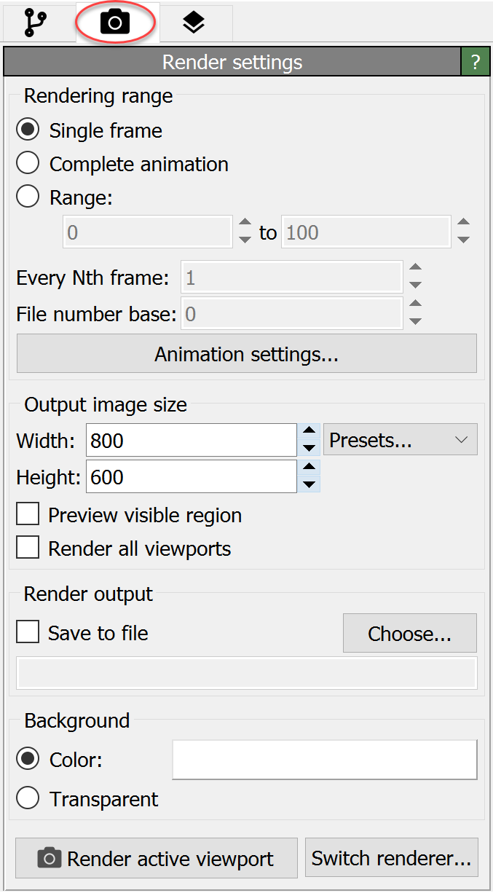

Render settings
{kind=link}
This panel contains general settings related to image and movie rendering, e.g. resolution, output filename, background color, etc. It is found on the Rendering tab of the command panel as depicted in the screenshot.
To start an image/movie rendering process, use the Render active viewport button located at the bottom of the panel or the button in the toolbar located above the viewports. OVITO will always render the currently active viewport, which is indicated by a yellow border. Right-click in a viewport to make it the active one.
By default, rendered images are displayed in the so-called frame buffer window after rendering is complete, but they are not automatically saved to disk. That means they will be lost as soon as you close the frame buffer window or quit OVITO. To save rendered images, you can either use the Save to file function found in the toolbar of the frame buffer window after rendering is complete or activate the Save to file option in advance in the Render settings panel, which is described below.
When rendering a movie note that the total length of the animation and the playback speed (frames per second) are set in the animation settings dialog, which can be opened using the Animation settings button.
Parameters
- Rendering range
Selects which animation frame(s) to render. If you decide to render an animation, i.e. a range of frames, make sure you also check the Save to file option and set an output filename below. Otherwise, the rendered animation will not get permanently saved to disk.
- Every Nth frame
This value determines which fraction of animation frames is actually rendered. Setting this parameter to 1 renders every animation frame. A value of 2 will render only every other frame, etc. Thus, you can use this to reduce the number of generated video frames in case of extremely long simulation sequences.
- File number base
When saving the frames of the animation as a series of image files (rather than a single movie file), OVITO automatically appends the frame number to the output filename. This setting lets you specify another base file number, i.e. an offset. This can be useful if you want to collect the video frames from several animation sequences in one directory and later combine them into one contiguous movie using an external video encoding software.
- Output image size
Sets the width and height of the rendered image or movie in pixels. Note that you can activate the preview mode for an interactive viewport window to see exactly which rectangular area of the viewport will be visible in the final output image.
- Preview visible region
This option activates preview mode for the current viewport window, which means it will display a rectangular frame indicating the area that will be visible in the rendered output image. The aspect ratio of the rectangular guide is determined by the output image width and height.
- Render all viewports pro
Activate this option to generate a composed output image with multiple side-by-side views of your 3d scene. The arrangement of the views is determined by the current layout of the interactive viewport windows. Note that you can modify the number, size and layout of the viewports by dragging the vertical and horizontal lines separating the viewport windows.
- Save to file
This option tells OVITO to save the rendered image or movie to disk in addition to displaying it in the frame buffer window. Use the Choose… button to pick an output filename. When rendering an animation sequence, all animation frames will be written to a single movie file if you pick a video format such as AVI or MPEG. If you choose an image format (e.g. PNG, JPEG), OVITO will instead produce a sequence of image files, one per frame. In this case, the frame number will automatically be appended to the base filename you picked.
- Background
You can choose between a uniform background color and a transparent background. In the latter case, OVITO will make those areas of the output image transparent that are not covered by any objects. This is useful if you intend to put the image in front of some other background later, for instance on a presentation slide. Note that transparency information (alpha channel) must be supported by the output format for this to work. Best choice is the PNG file format.
- Switch renderer
Use this button to select a different rendering engine. OVITO Pro offers several rendering engines, which differ in terms of visual quality and rendering speed. See the Rendering page for a list of options. Each rendering engine has specific parameters and settings, which are displayed in the separate panel below the Render settings panel.